What Brings You Back
Narrative Design
Context
Description
In What Brings You Back you play as a depressed teenager, who lost his happiness and must find it back! Through photographing his favorite park he slowly starts seeing beauty in life again and getting his happiness back. As you do, the colour of the world comes back and his world view changes.
This is a puzzle-adventure, narrative driven game, where you have to explore the map and solve riddles to further progress in the narrative.
Team: 3 people (1 Game Designer/Project Manager/Programmer; 1 Game Artist; 1 Music Composer/Sound Designer)
My role: Game Designer/Project Manager/Programmer
Development time (up to vertical slice): 5 months
Game Engine: Unreal Engine 5
Other programs used: Notion, Google Docs, Excel, Powerpoint, Blender, Adobe Substance Painter, PureRef, GitHub, Adobe Photoshop
What have I learned with this project?
Narrative wise, I learned how to properly plan out a story. Before this project I usually didn’t go much in depth in game narratives. I focused only on what the player needs to know and not on what I, the writer, need to know to make a cohesive tale.
But in my stubbornness to become a better writer and develop a good portfolio piece I went beyond what was asked of me for my university project, and tried to make something a bit more professional. And that was actually the key, to force myself to step up my game, I forced myself to learn more.
I also learned that having narrative feedback is very important, when sometimes I felt lost in the narrative I’d ask my group colleagues their opinion, and this always helped me get right back on track.
Overall, this project taught me how to design and write a compelling game narrative better. And most importantly, it showed me that I can create interesting stories, thus helping me finally start my other narrative projects with more confidence in my craft.
What was the goal of this game's narrative
The goal of this game concept was to raise awarness to mental health struggles, in this case more specific, but not exclusive, to men's mental health awareness.
We believed that this game could help raise awareness, and thus, benefiting multiple people. It would benefit the people who struggle with mental health, because they would feel like their feelings are valid. It would also benefit people who have went throught mental health struggles to not feel ashamed of their past. And of course, it would help people who have other close to them who are currently struggling with mental health.
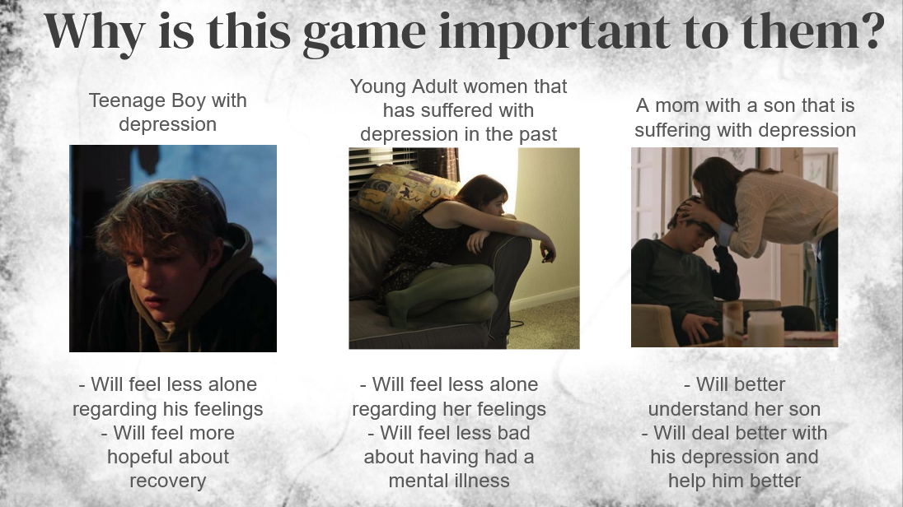
What I wanted the player to feel while playing this game
I wanted the player, even if they have never experienced depression, to feel how it can take away your spark, and how impactful it is in one’s life.
How was this achieved?
Narrative
I designed a few methods to achieve this, the first one is the most direct, the narrative. The narrative in this game is meant to be emotional and depict how depression changes our character’s perception of the world.
This is mainly visible in the analysis the character does to the riddle objects. If the character is “more depressed”, the analysis he will make will be more pessimistic; while if he is “less depressed”, the analysis he makes is more optimistic.
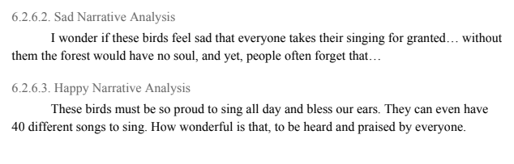
Another way this was achieved was through the notebook. The notebook is the place where our character writes his deepest thoughts about his life, almost like a diary. And through his notes we can have a glimpse of his backstory and how depression has affected his lifestyle and social life.
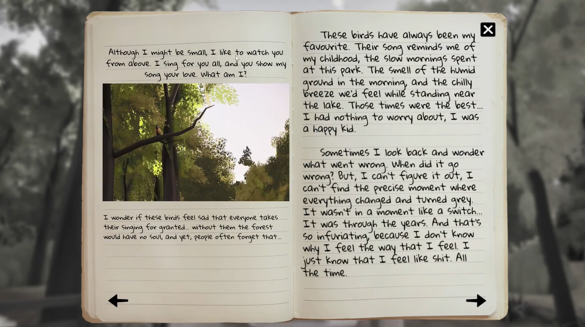
Both these aspects of how the narrative was presented to the player are very important so the player can understand the true nature of depression. However, telling is not enough if you have never been exposed to it, you may very well never understand what the words mean if you have not experienced it. That is why, I also joined some other ways to show the player how it really feels like; in hopes to better help the player understand.
Game and Colour
So our game can tell the player how depression feels like, how about showing what depression feels like?
So, as to show to the player how depression affects your daily life, I decided that the game’s colour would be affected by the character’s psychological state. In other words, when the main character was feeling super down, everything would be grey; and when the character was feeling okay, the world would have colour.
This was a deliberate choice to depict how, when depressed, your world view changes and the world seems to lose its spark. This way, the gameplay experience is affected by the character’s mental state, and thus, the player feels the impact of depression. Which is exactly what we wanted to achieve with this game, to show how impactful it is, to raise awareness.
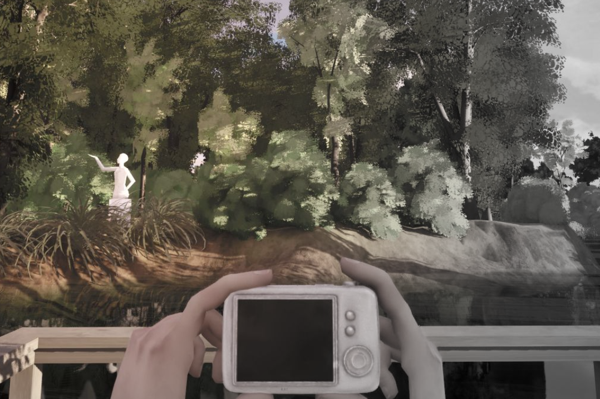
Game and Music
How about music then? Should the character's mental state also affect the game music? Absolutely! This is another strategy I found fitting for our game. The game should have less/more somber music while the character is more “down”; and have more/more uplifting music when the character is “happier”.
This is something our sound designer managed to pull off perfectly in the vertical slice. We all were really pleased with this feature outcome. Whereas, the colour feature needed some more fine tuning in the vertical slice; we wanted the colour to come back gradually, and not so fast that you can barely notice it.
And so these were the strategies I developed so that our game’s narrative feels present in the gameplay experience, and thus, helping our narrative goal.
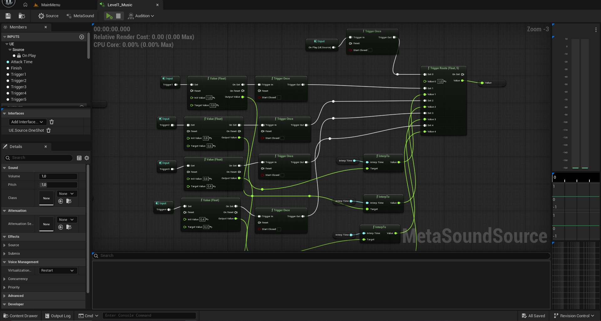
Plot Summary
A depressed teenager is losing himself in depression. The world is losing colour; the music that used to brighten his days now only makes them somber... He’s losing hope that he can be happy again, the meds only make him numb and he misses emotion.
He decides to go to the park to take some pictures. Photography, he used to be so good at it, he used to capture the beauty of nature and the colour of life... Now he seems to only capture how miserable and insufferable it is...
Miguel always takes his notebook everywhere with him. The notebook is filled with backstory of his life and the riddles. The riddles were things he and his best friend used to write to each other about the park when they were younger (12yo). Now he looks back at these and tries to remember what possible object they might correspond to.
But something is changing, as he takes pictures he starts to get that feeling back. The feeling that he can still feel emotions. So he braces. At first all the emotions the photos capture are pain and darkness. But as he continues he starts to capture what still makes life beautiful and happy. Because what the world is or isn’t, isn’t written on stone, it’s all about perspective.
Embarking on this journey of discovery will make him understand that the world isn’t only black and white, it is a full spectrum, sometimes the colour fades when you are sadder, but it's all a matter of perspective. The colour didn’t actually fade away, you just forgot to look for it. Don’t get stuck on one perspective on life, don’t get stuck on the rabbit hole, embrace life as it is, all and nothing at once, pain and glory, bad and good.
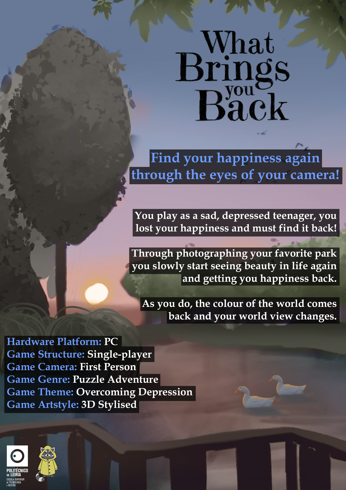
Game World
This game takes place through the years of 2023 to 2026 in Caldas da Rainha, more specifically, Parque Dom Carlos I. This park is in Portugal and we see the park during spring throughout the years.
Park Tone and Theme
The park gives the character a distant sense of comfort. What the park once was to Miguel was a place for fun and admiration, it was so beautiful... But now the park is without colour, so it symbolises the loss of his innocence, happyness, and childhood. The park is not only the reflection of what he lost, but also the beginning of his re-discovery.
Teenage Life
Since our main character is a teenager, our game will mainly focus on how teenagers react to mental health struggles, as well as what concerns them while they are in this precarious mental state. Furthermore, we want to show how important friendships and the social circle are at this age, and how they impact one’s self esteem; as well as the usual, search of one's identity, and reminiscence of one's past, in tries to understand where one stands in the world, that usually is more common around these ages.
Characters & Backstory
Our game only has really one character that you see, the main character, Miguel. But there are a lot of references to another character, Filipe; and some to Miguel's parents. In this section I’ll focus more on the more important characters for the narrative, which are Miguel and Filipe.
Miguel
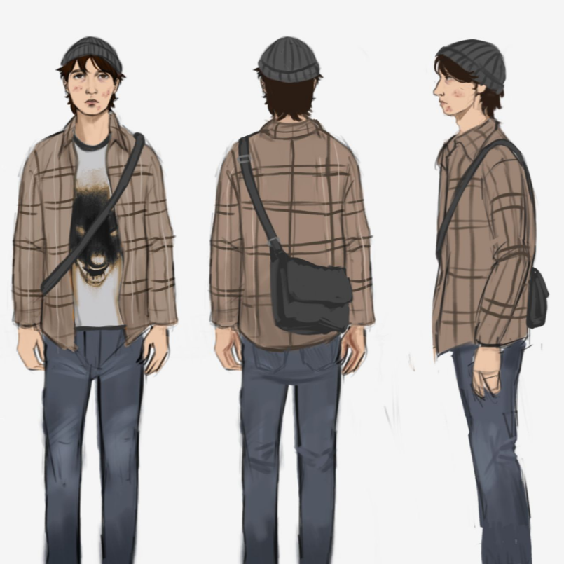
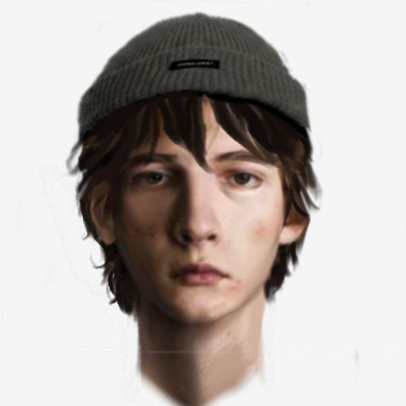
Summary
Miguel is our game's main character, the narrative develops around him. Miguel is a 16 year old teenage boy that is struggling with depression.
He used to be a kid that many would recall having this “sunshine” energy. And then, as he grew, his vital energy seemed to dimmer more and more. Once his family realised what was happening it was already really bad... Miguel is 16 now, and his world isn’t the same as it used to be. Now the world is a dark and colourless place...
Backstory
Miguel used to be really good at school without having to try, he picked up things easily and if he didn’t understand something he’d ask and eventually understand it. He was friendly with everyone but not popular, he was a shy kid. He liked his little bubble but didn’t mind playing and sharing experiences with his friends. What he most loved was photography. It amazed him how he could just take a picture and keep a moment untouched forever. It almost felt like magic, going against time, defying the world’s will.
Everything was so bright in his life, until it was not... He started to shut down, his best friend Filipe started to hangout with other people more and more, as Miguel started to shut down more and more. Miguel did remember all the good moments they spent together and often questioned if they were real. At the end of the day, Filipe left and it looked as if losing Miguel friendship didn’t phase him not even a little bit; Miguel started to question his worth, his importance in the world. He started to lose his spark, he no longer admired the world’s beauty, slowly but surely, everything lost its vitality, everything became somber. Eventually, his whole world lost colour.
People often ask what happened; how could this have happened when he was such a happy kid in such a happy house? Truth is, he doesn’t even know how he got in this situation, and it just makes him more upset.
Filipe
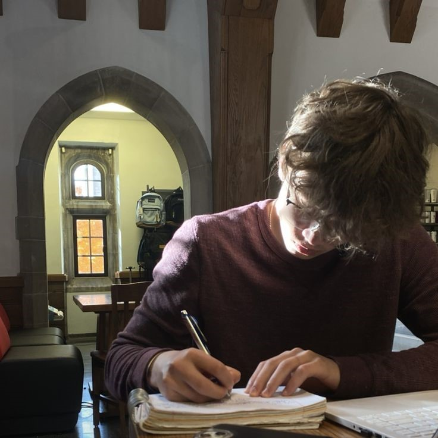
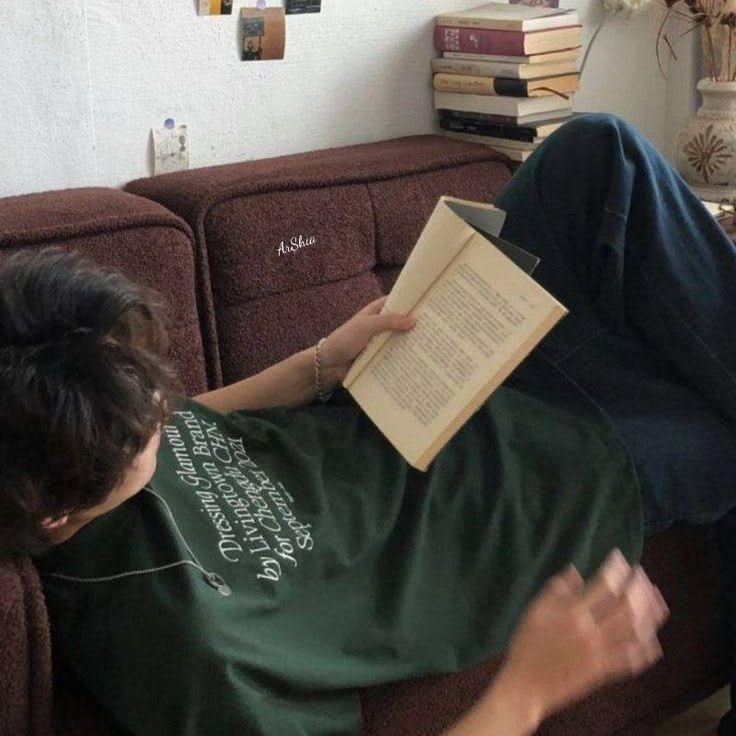
Summary
Felipe was Miguel’s best friend before Miguel started struggling with depression. The two of them were inseparable.
Filipe doesn’t appear in the game, only in references to his person.
Backstory
Filipe wasn't as good in school as Miguel was, but he didn’t mind. As long as he got to play outside with his friends and practise his writing skills he was happy.
From a young age Filipe has known he liked writing. Not necessarily big novels, rather some short funny stories that would make his friends laugh, or some infringing mysteries for his friends to uncover.
When he met Miguel he thought he was a bit different than the other kids, but in an interesting way. He didn’t like to participate in the games as much, he preferred to watch them and take photos. Filipe thought that was really cool, so he started talking to him and telling him his stories. Overall, bringing Miguel into his friend group more and more. And it turned out to be a really good idea, because soon they were inseparable.
One day Miguel told Filipe that he would like to play with others those fun and exciting games too, but that he wanted to have a fun and exciting game with others that involved photography. In response to this request Filipe couldn’t stay still, he came up with a game that both of them could have fun and do what each one liked the most. Miguel would take photos, and Filipe would tell stories. A riddle guessing game, where to guess you had to take the perfect photo! They played this game over and over again and never got tired of it. It felt good to finally be able to share an exciting experience with someone else who also had a peculiar taste for hobbies.
As they grew older they started to play this game less and less. Not because they didn’t enjoy each other's company, but rather because they started taking their hobbies to more serious levels and the game didn’t make sense anymore. Filipe started to write prose and to delve into big narratives. And Miguel started to take more artistic approaches to photography. They started to talk less because of this. It made Felipe sad, but he still had a bunch of friends he still played football with so it helped him not get too sad with his best-friend and him growing apart. (He actually was sad about it and would often write it out, but he wanted to believe he wasn’t as sad so he often tried to ignore these feelings).
And then Miguel became more distant, Filipe didn’t know what was happening but he felt off. He wouldn’t laugh as much at his jokes or take interest in lunch conversations with his friends. So Filipe felt hurt, he thought Miguel didn’t like his company anymore, so he gave him space. And then they were strangers again.
Plot Development & Game
The game was planned to have 7 chapters. Each chapter would focus on a different part of Miguel’s journey to overcoming depression.
As of right now, we only have released the vertical slice, which is supposed to be only the first chapter, and even so, a very contained version of it.
Plot and Chapters
The following scheme summarizes a bit the idea for each chapter.
| Chapter name | Symbolism | Chapter summary |
|---|---|---|
| Cipestre | Death | Miguel is aware of his depression and doesn’t seem to see an end to his suffering. He doesn’t have much hope that he will make it out alive. This chapter focuses more on displaying his most crude and deepest emotions and how twisted they are. |
| Anémona | Decadence | Miguel is still very depressed. He doesn’t believe he will die so soon as he did before, but he doesn’t see himself growing old. This chapter focuses a lot on the decay that has set upon himself. |
| Cardo | Suffering | In this chapter Miguel spirals a bit on how he got into this situation, how he got depressed. Overall, it is a chapter where he faces all of his suffering face to face. It’s an emotionally heavy chapter. |
| Oliveira | Hope | In this chapter Miguel starts to have hope on the world around him, and in himself. He starts believing that he can get better. |
| Videira | Change | In this chapter Miguel starts changing his overall perspective on the world around him. He starts to change how he perceives the world and his situation. |
| Alecrim | Cure | In this chapter, Miguel has accepted his condition and is starting to forgive himself for everything that happened; and seeing more and more beauty in the world that surrounds him. |
| Cravos Vermelhos | Freedom | In this chapter, Miguel is free from his dark thoughts. This chapter focuses a lot on his introspection in relation to this difficult time he went through. |
Game Narrative & Symbolism
I believe any narrative is better when there is implicit information being shared through symbolism; that is why I made sure to add symbolism in this game.
So, the following list contains the symbolism planned for the game:
- Every chapter has the name of a plant with a specific meaning; these meanings reflect on the theme of each chapter (ex: decadence)
-
There are 7 chapters in the game
- numerology of the 7: completeness, a complete chapter (7 days in a week).
- This symbolises the way that the whole game is a complete chapter of Miguel’s life; the chapter where he struggles and overcomes depression.
-
Parque Dom Carlos I
- This park was a place where patients from the thermal hospital went to recover. Thus this park has a heavy symbolism of recovering from one’s illnesses.
- This symbolises Miguel’s journey to recovery and how this very same park is also a big part of it.
-
Spring
- Every chapter of the game takes place in spring. Spring symbolises renewal/rebirth and youth.
- The renewal/rebirth symbolise Miguel’s process of finding himself again and understanding himself more deeply. While the youth symbolism is directly associated with Miguel’s age.
The process of coming up with Riddles
As you may know already, this game is defined by solving riddles. So, I, as the game designer, had to write riddles for this game.
Believe it or not, this was not an easy task. First I had to define which objects in the map would have riddles related to them. Since this was just for the vertical slice this wasn’t very hard. I just had to ask our artist which assets she had ready for the vertical slice, and pick a few.
After selecting the riddle objects, I had to learn how to write riddles, and not only that but also, learn how a 12 year old might write riddles (this because in our game narrative the riddles were written by the MC old best friend, when they were 12). And so I researched, and tried, and failed, and tried again, and failed. And when I finally thought I got it, I came across a problem (this after playtesting). Many testers mentioned that one of the riddles was too hard because, if they didn’t know the place the game takes place in, they didn’t know what the riddle was referring to (see the riddle in question in the image below). And so I had to fix this! Of course the riddles couldn’t require previous knowledge of the park, that wouldn’t be fair, nor what we wanted in this game. So I rewrote this riddle.
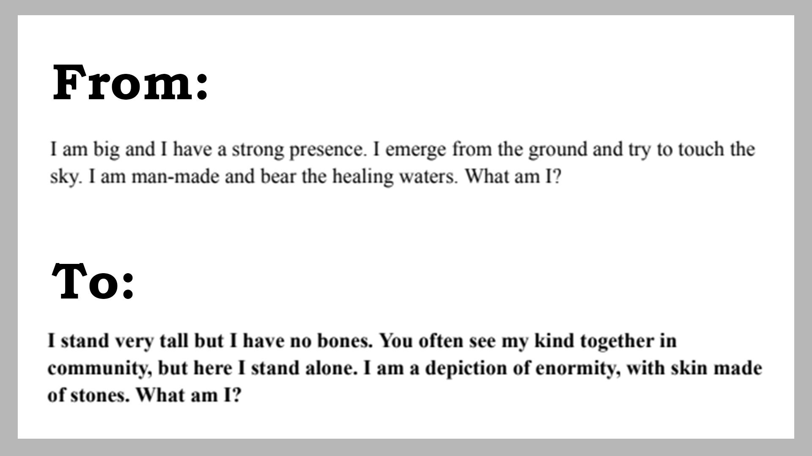
In the end, the riddles were a bit easy, mainly because of the vertical slice build. Because the character was stuck in one small porch and couldn’t really explore the map. But in the full game, the riddles would have worked better, since the player would have to wander around more and really look for the objects.
Some narrative concepts I always kept in mind
What is the notebook to Miguel?
The notebook is Miguel's way to express his emotions. It is also a kind of timeline where we see the process and progress of his mental illness. It also works as a diary so it shows Miguel how he dealt with his emotions previously.
What is the camera to Miguel?
The camera is the subject of his favourite hobby while growing up, photography. The camera acts as Miguel glasses; something that helps him see the world better, and expose the different perspectives one can take while interpreting the world. In a way, Miguel has always understood the world better through his camera lenses.
What are the riddles to Miguel?
The riddles were something he and his best-friend used to do when they went to the park together. Filipe would come up with a riddle and Miguel would try to find the subject of the riddle and photograph it. It was their own game. Now, the riddles work as Miguel's way to reconnect to his younger self, and to his childish happiness.
Why did Miguel go to the park in the first place?
Miguel decided to go to the park because his parents “kindly asked him to”. His parents suggested that he go to the park because when he was younger he used to love going, and so the park was a big source of joy to him. In hopes to help their son get better they suggested he go back to that park so that maybe the park would fill his life with joy again.
Wanna Know More About This Project?
Check Out Our Game Page!